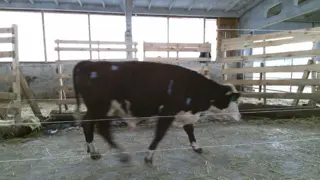
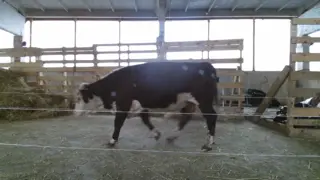
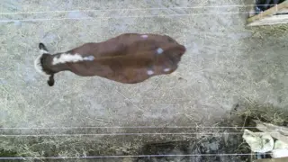

L-DRAG ORBIT · R-DRAG PAN · CTRL+L / SCROLL ZOOM · CLICK EXHIBITS · C ROAM · ESC MAP
TAP A NUMBER TO WALK THERE · DRAG TO LOOK · 🐮 EXIT
RESEARCH QUESTION · 00 / 08
How can three RGB views become kilograms?
Follow the amber evidence path through the paper.
Collect the left RGB view.



AGREEMENT RANCH / THE SPRINT
PRESS SPACE OR ENTER
Playful method analogy · no model inference or scientific scoringARXIV PREPRINT · INTERACTIVE RESEARCH DEMO
Agreement-Driven Multi-View 3D Reconstruction
for Live Cattle Weight Estimation
Trace three matched RGB views through segmentation, reconstruction, and a validated weight estimate—no scale or depth sensor at inference.
103 CATTLE · 5-FOLD CV · 2.22% MAPE · R² 0.69
THE AMBER PATH FOLLOWS THE METHOD · CLICK EXHIBITS · 0–8 JUMP · C ROAM · ESC MAP
ALL ENTRANCES START AT STEP 00 WITH YOUR CALF · DRAG TO LOOK · T FOR VOICE TOUR